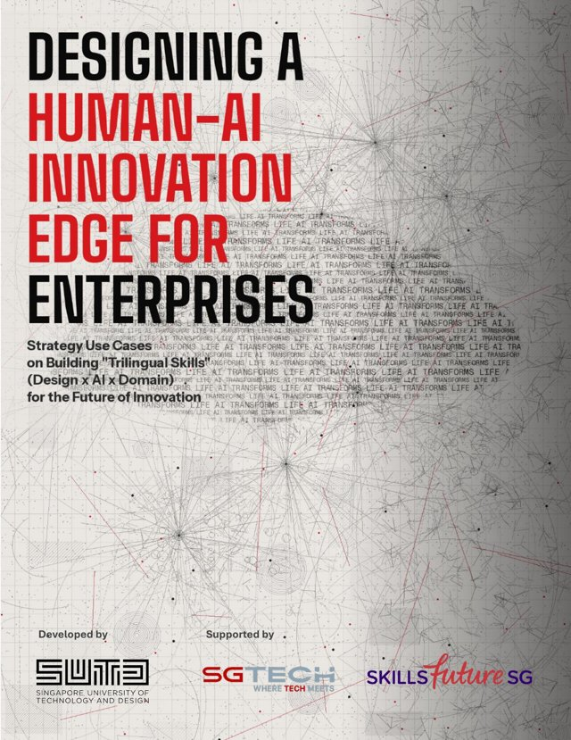

Most conversations ask what AI can do — and what it will do to people. This briefing asks a better question: what can AI do for people, and what can your people do with AI? Seventeen real cases. Ten decisions only a leader can make.
This report is a collaboration: developed by SUTD, and supported by SGTech and SkillsFuture Singapore — whose individual efforts converged into a single national ecosystem for human-AI innovation.
The world's first Design·AI university. Developed the publication, and runs the research, workshops and executive programmes behind the case studies.
Research · Training · InnovationSingapore's leading trade association for tech, representing 1,400+ companies. Conceptualised the AI Impact Series and mobilised enterprises across the economy.
Enterprise MobilisationDrives the national SkillsFuture movement — the policies and programmes that enable the upskilling opportunities across these use cases.
National Skills PolicyLandmark economics research warns that of five types of technology, only new-task-creating technologies are unambiguously pro-worker. Yet current AI investment overwhelmingly targets automation.
Singapore's answer: don't just train workers to use AI — empower them to innovate and create with it. A decade of skills infrastructure (SSG, now SWDA), enterprise mobilisation across 1,400+ companies (SGTech), and design-led research and training (SUTD) have converged into a national approach that is ahead of the global curve. The evidence below shows it works.
The age of AI is here. How human it becomes is up to you. Each decision below is drawn from real evidence across the seventeen strategy use cases — click to expand.
The organisations that win won't be the ones with the best AI. They'll be the ones whose people speak three languages at once — and know how to combine them.
Framing the right problem before reaching for AI. Translating everyday frustrations into testable use cases. Prototyping early, iterating fast, and judging what's worth building at all.
Going beyond chatbots and text prompts — to multi-modal AI, custom GPTs, low-code agents, and multi-agent solutions. Knowing which tool fits which problem, and how to verify outputs.
The decade of practice AI cannot replicate. Domain expertise is what makes AI useful — it provides the context, constraints and judgement that turn generic output into real value.
Design × AI × Domain = innovation from anyone, anywhere in your organisation
The most valuable new skill your people can develop is judgement — knowing which mode to work in. Explore each mode:
Delegate repetitive, structured, auditable tasks: data processing, report drafting, call routing, compliance checks. At KHL Printing, employee-built prototypes cut repetitive task time by up to 63%. Benefits are quantitative — speed, volume, consistency.
Work with AI from conceptualisation to co-creation: strategy, analysis, design, forecasting. For complex leadership decisions, AI's different way of reasoning becomes a feature — a devil's advocate, blind-spot detector, even a muse. Humans hold authority.
Some work demands what only humans can give: sensing a room, reading emotions, ethical trade-offs, relationships, the spark of curiosity between people. Choosing not to use AI is itself a skill — and a signal of a mature AI organisation.
From a ten-person art studio to an MNC's AI design team. From junior colleges to national institutions. Filter by what looks most like your organisation — every card opens a deeper story.
Tick what's genuinely true today. Be honest — the gap is where your edge will come from.
Tick the decisions you've already made to see where you stand.

"This report is a first draft of the future — a sharing of what we've learnt so far."
It captures the first wave of case studies from ongoing research, experimentation, and deployment across Singapore's organisations, schools, and workforce development institutions. Additional case studies will be added as new partnerships produce evidence and new patterns emerge. These use cases show leaders ten decisions you can make to put humans at the heart of our age of AI — and strive closer to a human-centred future.
Every result on this page came from partnership. The ecosystem behind this report — SUTD, SGTech, and SWDA (formerly SkillsFuture Singapore) — works with enterprises in three ways:
Living labs and joint research that put your organisation ahead of the curve — the same engine behind SJ Group's AI design team and the C-suite digital twin study.
Hands-on programmes where your people don't learn about AI — they build with it, and leave with working prototypes for real business problems.
From first jobs to encore careers — pathways that turn your entire workforce into builders, with national SkillsFuture support where eligible.
Start the conversation about research, training, and workforce upgrading for your organisation and your people.